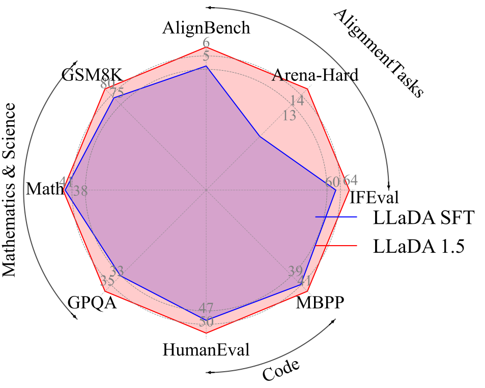
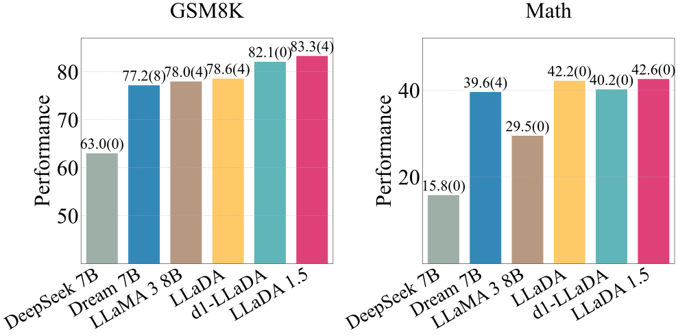
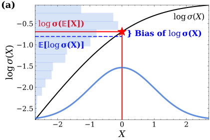
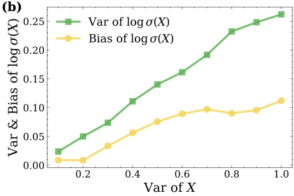
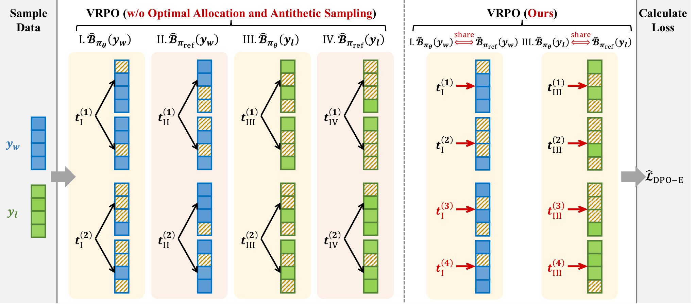
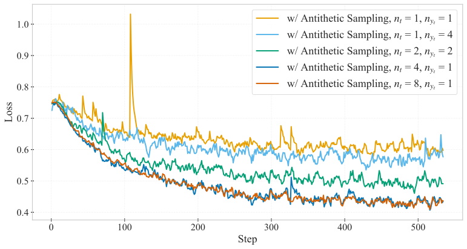
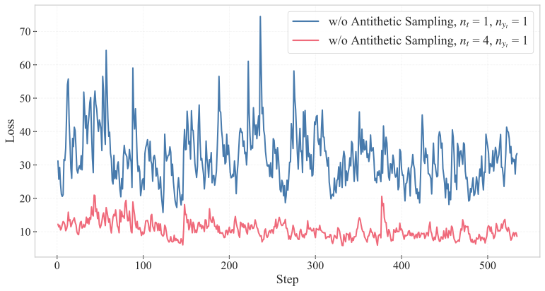

LLaDA 1.5：给扩散语言模型的偏好优化降方差
LLaDA 1.5: Variance-Reduced Preference Optimization for Large Language Diffusion Models
阅读状态、进度与收藏只保存在你的浏览器里。本页依据 arXiv v2（2025-10-12）与 ACL 2026 正式版。正式版的署名是 9 人（没有 Jun Hu 和 Jianfei Chen，单位也只剩人大的三个和蚂蚁集团），并多了“局限”一节和几组附录实验；本页引用这些内容时注明“ACL 版”。
逐节精读
这部分按论文的章节顺序，用本站自己的话把整篇论文从头讲一遍。读懂某个概念需要的背景知识，会在第一次用到它之前单独讲清楚（青色框）。每个结论都尽量说出“因为什么、所以什么”。论文以 CC BY 4.0 发布，所以原图直接放在讲到它的地方，并说明怎么看；原图没画到的概念，用本站的示意图补上。标“推算”的数字是本站根据论文数据算出来的，标“读图估计”的是从原图坐标读出的近似值，都不是论文原话。每节末尾有英文原文的链接。
0 导读：这篇论文解决什么问题
给大语言模型做“对齐”，最常见的一步是偏好优化：拿同一个问题下的两个回答，一个人类更喜欢（记作 \(y_w\)），一个不那么喜欢（记作 \(y_l\)），训练模型以后更倾向于写出前一种。2023 年提出的 DPO（直接偏好优化）把这件事做得特别简单，不用另外训练奖励模型，也不用在线采样，只要能算出“模型生成这整个回答的对数概率”就行。对于从左到右逐词生成的自回归（AR）模型，这个对数概率做一次前向计算就能精确得到，所以 DPO 很快成了开源模型后训练的标配。
掩码扩散语言模型（如 LLaDA）卡在了这一步。它生成一段话要经过很多轮“填空”，而且不按固定顺序，所以一整个回答的精确对数概率算不出来。能算的只有它的一个下界，叫 ELBO（证据下界）；而 ELBO 本身也是一个双重期望（先随机挑一个遮盖程度，再随机挑遮哪些词），只能用少量随机样本去估。把这样一个“带噪声的估计”塞进 DPO，问题就来了：DPO 的损失是对估计值做了一次非线性变换（\(-\log\sigma\)），于是估计里的随机误差不仅让损失和梯度忽高忽低（方差），还会让它们系统性地偏离真正的目标（偏差）。
这篇论文的贡献可以概括成一句话：偏差和方差都由同一个量控制，就是“偏好分数估计值”的方差，所以只要把它压下去就行。围绕这个结论，作者给出三个不引入偏差的降方差办法，合称 VRPO（方差缩减的偏好优化）：① 多采几个样本（每个 ELBO 用 8 个遮盖样本）；② 同样多的样本，全部用来换不同的遮盖程度，每个遮盖程度只采一种遮法；③ 对偶采样，让当前模型和参考模型对同一个回答使用完全相同的遮法，这样两者的随机误差大部分相互抵消。后两个办法不增加任何计算。
作者用 VRPO 在 LLaDA 8B Instruct 上训练了一轮（350K 个内部偏好对，约 405 个 H100 GPU 小时），得到 LLaDA 1.5。相对只做过 SFT 的 LLaDA，它在数学（GSM8K +4.7）、代码（HumanEval +3.0、MBPP +1.8）和对齐类评测（IFEval +4.0、Arena-Hard +4.3）上都更好；而不做任何降方差处理的“朴素 DPO”只在部分任务上有提升，在 Math、HumanEval、IFEval、MT-Bench 上反而略降。这些数字有多少来自算法、多少来自数据和采样设置，§4.5 会专门讲。


读完这部分，你应该能回答这几个问题：
- DPO 的损失是怎么从“奖励模型 + 强化学习”推出来的？为什么它需要整条回答的对数似然比？
- 掩码扩散模型的 ELBO 是什么样的双重期望？用蒙特卡洛去估它，误差来自哪两层随机性？
- 估计值本身是无偏的，为什么代入 DPO 之后损失和梯度却是有偏的？
- 定理 1 说“偏差和方差都受分数估计的方差控制”，这句话具体是什么意思？它有多紧？
- VRPO 的三个办法各自降低的是哪一部分方差？为什么“全部分给时间步”是最优分配？为什么对偶采样几乎是免费的？
- 表 1、表 2 里的提升是在什么对照下测出来的，哪些地方要打折扣？
1 引言：扩散语言模型的对齐卡在哪里
监督微调（SFT）是“照着标准答案学”：给模型一个问题和一个写好的回答，让它逐字复现。它能教会模型对话的格式和基本能力，但有两个局限。第一，它只告诉模型“什么是好的”，从不告诉它“什么是不好的”，所以模型学不会避开那些看起来通顺、其实答错或者没按要求做的回答。第二，很多要求很难写成唯一的标准答案，例如“回复里不要用逗号”“至少用三个占位符”，人很容易判断两个回答哪个更符合，却很难写出完美的那一个。
偏好对齐就是利用这种“比较”信号：对同一个问题收集一对回答，标注哪个更好，然后训练模型提高好回答的概率、压低差回答的概率。ChatGPT 一代的做法是先训练一个打分的奖励模型、再用强化学习（PPO）优化；DPO 把这两步合成了一步。§2.1 会把两者的关系推导一遍。
论文的出发点是一个空白。掩码扩散模型（MDM）在小规模上已经能在困惑度上追平甚至超过 AR 模型；放大之后，LLaDA 8B 在多数基准上和 LLaMA 3 8B 相当。与此同时，AR 模型的对齐方法（PPO、DPO、GRPO 等）已经非常成熟。已经有一些工作开始给扩散模型做对齐，但作者指出它们有两个共同的不足：一是大多直接套用现成的对齐框架，再配上某种似然近似，却没有分析这种近似会给优化带来什么影响；二是大多只针对数学推理、代码生成这类可以自动判对错的专门任务，而通用对齐（写作、问答、遵循指令）几乎没有人做。
作者选了 DPO 作为切入点，理由是它简单、效果好。它的关键难点也很明确：DPO 需要精确的对数似然，而扩散模型给不出来。最自然的替代是用 ELBO 代替对数似然。ELBO 里有两层期望，一层对扩散时间（遮盖程度）求，一层对“遮哪些词”求；代入 DPO 后，偏好分数变成四个 ELBO 的线性组合（当前模型和参考模型，各自对好、差两个回答）。实际训练时，每个 ELBO 都要用“双重蒙特卡洛”去估：先抽几个时间，每个时间再抽几种遮法。
作者证明，这个估计给 DPO 的损失和梯度都额外引入了偏差和方差；并且这两种误差都由同一个量控制，即偏好分数估计值的方差。由此得到 VRPO 的三个办法：加大每个 ELBO 的采样预算；把预算分配到不同的时间上、每个时间只抽一种遮法；在当前模型和参考模型的 ELBO 估计之间做对偶采样。这三个办法在理论上都被证明能无偏地降低分数估计的方差，在玩具例子（原文图 2）和大规模消融（§4.2）里也得到了验证。作者还讨论了它们怎样推广到 PPO、GRPO。
最后，作者把 VRPO 用在 LLaDA 8B Instruct 上，使用 35 万（350K）个偏好对，得到 LLaDA 1.5。它在数学、代码和对齐任务上都稳定地超过 LLaDA，并且在 Math 上取得了图 1 右侧所比模型里的最高分。
- “LLaDA 1.5”这个名字容易让人以为是重新预训练的新一代模型。实际上它就是 LLaDA 8B Instruct 再做一轮偏好优化得到的，架构、预训练数据都没有变，计算量不到预训练的 0.5%（§4.1）。
- 标题里的 “Preference Optimization” 在引言的一处被写成了 “Variance-Reduced Policy Optimization”，是笔误；全文其他地方都是偏好优化。
- 本文的“对齐”指的是离线的 DPO：训练数据是事先收集好的固定偏好对，训练中不让模型自己生成回答。这和 d1 那种在线采样、用程序判对错的强化学习是两类做法（§3.4 会对照）。
2 预备知识：DPO 要什么，扩散模型给得出什么
2.1 从奖励模型、强化学习到 DPO
假设每个回答都有一个看不见的“质量分” \(r(x,y)\)（\(x\) 是问题，\(y\) 是回答）。Bradley–Terry 模型（1952 年提出，原本用来给体育比赛或品尝试验排名）假定：人在两个回答之间选 \(y_w\) 而不选 \(y_l\) 的概率，只取决于两者质量分的差，并且是这个差的 sigmoid 函数：
举个例子：如果两个回答的质量分分别是 1.0 和 −0.5，差是 1.5，那么人选前者的概率是 \(\sigma(1.5)\approx0.82\)（推算）；分差为 0 时概率是 0.5，就是抛硬币。分差越大，选择越确定。
有了这个模型，就可以从数据里学出质量分：用一个神经网络 \(r_{\phi}\) 当奖励模型，让它给人类偏好的回答打更高的分，也就是最大化上面那个概率的对数。这就是论文式 (1)：
这个损失后面会反复出现，记住它的形状：“\(-\log\sigma\)（好的分数 − 差的分数）”。
传统做法：先训奖励模型，再做强化学习。有了奖励模型 \(r_{\phi}\)，第二步是调整语言模型（在强化学习里叫“策略” \(\pi_{\theta}\)，\(\pi_{\theta}(y\mid x)\) 就是它对问题 \(x\) 生成回答 \(y\) 的概率），让它生成的回答拿到高分，同时又不要离出发点太远。“不要太远”用一个 KL 散度惩罚来表达，参照物 \(\pi_{\text{ref}}\) 通常就是冻结的 SFT 模型。论文式 (2)：
系数 \(\beta\) 越大，模型越被拉回参考模型附近。KL 惩罚之所以必要，是因为奖励模型只在它见过的那类回答上可靠；如果不加约束，策略会钻奖励模型的空子，写出分数很高但人看了并不满意的回答。论文特别提了一句：对 AR 模型来说，策略的“采样”和“算似然”都由同一个语言模型分布精确给出，这正是下面 DPO 能成立的前提。
DPO：把奖励模型“藏进”策略里。式 (2) 这个带 KL 惩罚的最大化问题有一个闭式最优解（DPO 原论文推导，这里只给结论和直觉）：
它的意思是：最优策略就是把参考模型的概率按奖励的指数重新加权，奖励高的回答被放大，奖励低的被压低；\(Z(x)\) 是让概率加起来等于 1 的归一化常数，只和问题 \(x\) 有关。把这个式子反过来解出奖励：
这一步是 DPO 的关键：奖励可以用“策略相对参考模型把这个回答的概率抬高了多少”来表示，所以这个量常被叫作“隐式奖励”。把它代入 Bradley–Terry 的偏好概率，两个回答的奖励相减时，只和问题有关的 \(\beta\log Z(x)\) 正好抵消，于是奖励模型完全不需要了。剩下的就是论文式 (3) 的 DPO 损失：
和奖励模型的损失 (1) 对照一下，形状完全一样，只是“质量分”换成了隐式奖励 \(\beta\log\frac{\pi_{\theta}}{\pi_{\text{ref}}}\)。sigmoid 里面那一项，本文后面叫它偏好分数，记作 \(s_{\theta}\)。直觉上，DPO 在做的事情是：让当前模型相对参考模型，把好回答的概率抬得比差回答更多。
DPO 的梯度在做什么。对式 (3) 求导，可以得到一个很好懂的形式（把 \(s_{\theta}\) 记作 sigmoid 里面那一项）：
方括号里是方向：抬高好回答的对数概率、压低差回答的。前面的 \(\sigma(-s_{\theta})\) 是权重：如果模型已经明显偏好 \(y_w\)（\(s_{\theta}\) 很大），权重接近 0，这对数据基本不再推；如果模型反而偏好 \(y_l\)（\(s_{\theta}\) 为负），权重接近 1，使劲推。这个“排错了的对多推、排对了的对少推”的自适应权重，是 DPO 好用的原因之一。§3.2 会看到，分数估计里的噪声恰好会破坏这个权重。
DPO 损失里的 \(\log\pi_{\theta}(y\mid x)\) 是“模型生成整个回答 \(y\) 的概率”的对数，不是某一个词的概率。AR 模型按链式法则把它拆成每个词在前文条件下的概率之和：
因为用了因果注意力，把整个回答送进模型做一次前向计算，每个位置的输出就是它在前文条件下的分布，把 \(L\) 个位置上“真实词”的对数概率读出来加起来，就是精确的 \(\log\pi(y\mid x)\)。所以 AR 模型上一步 DPO 的计算量大约是：当前模型对 \(y_w,y_l\) 各一次前向加反向，参考模型各一次前向。
2.2 掩码扩散模型：似然只有下界，下界也只能估
掩码扩散模型定义了两个过程。前向过程从完整的回答出发，随时间 \(t\) 从 0 走到 1，把每个词独立地以概率 \(t\) 换成掩码符号 \(\mathrm M\)；到 \(t=1\) 时整段都是 \(\mathrm M\)。反向过程从全是 \(\mathrm M\) 的序列出发，一轮一轮地把 \(\mathrm M\) 换回词。模型本身是一个双向注意力的 Transformer（论文叫它掩码预测器 \(p_{\theta}\)），它看到一个被遮了一部分的序列，同时预测所有被遮位置原来是什么词。
训练的目标是让模型在各种遮盖程度下都猜得准。对一个回答 \(y\)（问题 \(x\) 不遮），先抽一个时间 \(t\sim\mathcal U[0,1]\)，再按 \(t\) 遮出 \(y_t\)，计算被遮位置上“猜中原词”的对数概率之和，再乘以权重 \(\frac1t\)（附录式 (13)）：
权重 \(\frac1t\) 的作用是平衡：\(t\) 小时被遮的词少，每个词的贡献放大一些。这个量对 \(t\) 和遮法取期望，就是 ELBO。
论文式 (4) 把 ELBO 写成：
这里 \(\pi(y\mid x)\) 是反向过程生成 \(y\) 的概率。它算不出来的原因在于：生成 \(y\) 可以走无数条不同的“填空路径”（哪一轮填哪些位置），真实概率要对所有路径求和。ELBO 是变分推断里的标准技巧给出的一个下界，好处是只需要上面那种“随机遮一遍、猜一遍”的量就能算。论文 v2 说，对训练充分的模型、在连续时间的极限下，ELBO 和真实对数似然的差距可以忽略（引用了扩散模型的若干经典工作）；ACL 版把这句话改得更谨慎，说差距“可以很小”。
双重蒙特卡洛估计。ELBO 里有两层期望，精确计算不可能，实际做法是两层都抽样（论文式 (5)(6)）：先独立抽 \(n_t\) 个时间 \(t^{(1)},\dots,t^{(n_t)}\)；对每个时间 \(t^{(j)}\)，再独立抽 \(n_{y_t}\) 种遮法；把这 \(n=n_t\times n_{y_t}\) 个样本上的 \(\ell_{\pi}\) 取平均：
由期望的线性，这个估计是 ELBO 的无偏估计：平均意义上不多不少。但每多一个样本就要多做一次前向（训练时还要反向），所以 \(n\) 不可能取很大，估计值总带着随机误差，也就是方差。论文要解决的就是：在 DPO 里，这个方差会造成什么后果，又该怎么压低它。
实际用的是“遮恰好 \(l\) 个词”的版本。附录 A 指出，还有一种和式 (4) 期望相等的写法（附录式 (14)(15)）：不抽时间 \(t\)，而是从 \(\{1,\dots,L\}\) 里均匀抽一个整数 \(l\)，不放回地恰好遮 \(l\) 个词，权重换成 \(\frac{L}{l}\)。两种写法期望相同，但后者每次遮的词数是确定的，不会出现“抽到 \(t=0.5\) 却碰巧只遮了 1 个词”这种额外的波动，所以方差更小；LLaDA 的论文已经指出这一点，本文的似然估计也用这个版本。下文说的“时间步”在实现里对应的就是这个 \(l\)。
底座模型。LLaDA 是 8B 参数的掩码扩散模型，在 2.3T（2.3 万亿）个 token 上预训练，再用 450 万对 SFT 数据微调，得到 LLaDA 8B Instruct，本文以它为起点和参考模型。附录表 3 给出了它的结构：32 层、隐藏维度 4096、32 个注意力头（KV 头也是 32 个，没有用分组查询注意力）、词表 126,464、FFN 维度 12,288，总参数 8.02B，不含嵌入层 6.98B。和 LLaMA 一样用 RMSNorm、RoPE 和 SwiGLU，只是注意力是双向的。
2.3 补充：蒙特卡洛估计、偏差与方差
这一小节是本站补的基础，论文默认读者已经熟悉。后面所有论证都建立在这几个概念上。
想知道一个随机量 \(Z\) 的期望 \(\mathbb E[Z]\)，但算不出来，就独立地抽 \(n\) 个样本取平均，这叫蒙特卡洛估计。好比想知道全国人的平均身高，就随机量 \(n\) 个人求平均。
- 偏差是“估计值的平均”和“真值”之差。如果多次重复估计、平均下来正好等于真值，就叫无偏。随机抽人量身高的平均是无偏的；如果只在篮球队里抽，就有偏，抽再多人也纠正不了。
- 方差是估计值围绕自己的平均来回波动的程度。\(n\) 个独立样本平均之后，方差是单个样本方差的 \(\frac1n\)，标准差是 \(\frac{1}{\sqrt n}\)。所以样本多 4 倍，误差只缩小一半。
打靶的比喻：偏差是弹孔的中心离靶心多远，方差是弹孔散得多开。一个估计可以无偏但方差很大（弹孔散布在靶心周围），也可以方差很小但有偏（弹孔扎堆在靶心旁边）。
假设 \(X\) 是某个量 \(\mu\) 的无偏估计，即 \(\mathbb E[X]=\mu\)。如果我们真正想要的是 \(f(\mu)\)，就会很自然地拿 \(f(X)\) 去估它。只要 \(f\) 是线性的，\(\mathbb E[f(X)]=f(\mu)\)，没有问题；可一旦 \(f\) 是弯的，平均值就会被拉偏。这叫 Jensen 不等式：\(f\) 是凸函数（向上弯）时 \(\mathbb E[f(X)]\ge f(\mathbb E[X])\)，凹函数时反过来。
一个最小的例子：\(\mu=0\)，\(X\) 以一半概率取 \(+2\)、一半取 \(-2\)，平均正好是 0，是无偏的。取 \(f(x)=x^2\)，\(f(\mu)=0\)，可 \(\mathbb E[f(X)]=4\)。\(X\) 波动越大，\(f(X)\) 的平均偏离越多。§3.1 会看到，DPO 的 \(-\log\sigma(\cdot)\) 就是这样一个“弯”的函数。
ELBO 估计是两层抽样：先抽时间，再在每个时间下抽遮法。全方差公式说，总方差可以拆成两部分：
用调查做比喻：想估全国家庭的平均收入，先抽城市、再在每个城市里抽家庭。总的不确定性一部分来自“城市和城市之间差别很大”，一部分来自“同一城市里家庭之间的差别”。第一部分只有多抽城市才能降下来，在同一个城市里多抽家庭对它毫无帮助。§3.3 的“最优分配”就是这个道理。
3 方法：用 ELBO 代替似然，再把估计的方差压下去
3.1 把 DPO 里的似然换成 ELBO：分数无偏，损失却有偏
第一步很直接：把 DPO 损失 (3) 里的四个对数似然全部换成各自的 ELBO，得到论文式 (7)：
大括号里的量叫偏好分数 \(s_{\theta}\)，它是四个 ELBO 的线性组合。含义和原版 DPO 一样：比较当前模型相对参考模型，在好回答上的 ELBO 抬高了多少、在差回答上抬高了多少，前者越多于后者，损失越小。作者认为这个替代是可靠的，理由有两条：一是 §2.2 提到的，训练充分时 ELBO 和对数似然的差距很小；二是 DPO 损失本身的结构（好、差两边对称相减，加上 sigmoid 很平滑）会进一步缓和这种近似误差。
实际训练用的是估计值。每个 ELBO 都用 §2.2 的双重蒙特卡洛去估，得到论文式 (8) 的“估计损失”：
因为四个 ELBO 估计各自无偏，而 \(\hat s_{\theta}\) 只是它们的线性组合，所以分数估计 \(\hat s_{\theta}\) 也是无偏的（附录命题 3），这一点没有问题。问题出在外面那一层 \(-\log\sigma\)。对一对固定的数据，每次抽到的时间和遮法不同，\(\hat s_{\theta}\) 就不同，于是估计损失变成了一个随机量，它和它的梯度都带上了方差。更麻烦的是，\(-\log\sigma\) 是一个弯曲的函数，按 §2.3 讲的 Jensen 不等式，\(\mathbb E\big[\log\sigma(\hat s_{\theta})\big]\) 不等于目标 \(\log\sigma(s_{\theta})=\log\sigma\big(\mathbb E[\hat s_{\theta}]\big)\)，于是损失还带上了偏差。分数是无偏的，损失却是有偏的，这是本文分析的起点。


把玩具例子换成 DPO 的语言，再看一个更夸张、也更接近实际的算例。假设某对数据的真实分数 \(s_{\theta}=0\)（模型对两个回答没有偏好），真实损失是 \(-\log\sigma(0)=\log2\approx0.693\)。估计值 \(\hat s_{\theta}\) 以一半概率偏高 \(d\)、一半概率偏低 \(d\)，平均仍是 0。下表的 \(d\) 取的是表 2 中几种配置实测分数方差的平方根，只是借用它们的数量级：
| 分数估计的标准差 \(d\) | 对应表 2 哪种配置的数量级 | 估计损失的平均 | 偏差（比 0.693 多出多少） |
|---|---|---|---|
| 1.0 | 每个 ELBO 8 个样本，对偶采样（方差 1.0） | 0.813 | 0.120 |
| 2.0 | （介于其间） | 1.127 | 0.434 |
| 6.63 | 每个 ELBO 1 个样本，对偶采样（方差 44.0） | 3.318 | 2.625 |
| 46.7 | 4 个样本，不做对偶采样（方差 2183.7） | 23.37 | 22.67 |
以上均为推算。可以看到两点。第一，偏差的方向是固定的：\(-\log\sigma\) 是凸函数，噪声只会让估计损失偏大，不会偏小。第二，偏差随标准差增长得很快，当标准差到几十时，估计损失几乎等于 \(\max(0,-\hat s_{\theta})\) 的平均，和真实损失已经毫无关系。后面看训练曲线（§4.3）时，会在“不做对偶采样”那一组里看到正是这个量级的损失。
3.2 定理 1：损失的偏差和方差，都被分数估计的方差管着
作者的核心理论结果是定理 1：对一对固定的偏好数据，估计损失的偏差和方差都可以用分数估计的方差来界定：
期望和方差都是对估计时的随机抽样（时间、遮法）取的。证明只用到两个事实（附录 B.1、B.2）。第一，\(f(x)=\log\sigma(x)\) 的导数 \(f'(x)=\sigma(-x)\) 始终在 0 和 1 之间，所以它是“1-Lipschitz”的：输入变动多少，输出最多变动多少。于是 \(|f(\hat s)-f(s)|\le|\hat s-s|\)，取平均后再用一次 Jensen 不等式，\(\mathbb E|\hat s-s|\le\sqrt{\mathbb E(\hat s-s)^2}\)，而因为 \(\hat s\) 无偏，后者正好是 \(\hat s\) 的标准差。第二，方差那一条用了 \((a+b)^2\le2(a^2+b^2)\) 拆两次，所以出来一个系数 4。
直观地说：\(-\log\sigma\) 这个函数“不会把输入的抖动放大”，所以分数估计抖多少，损失最多就跟着抖多少；分数估计越稳，损失的平均就越接近真值。这样一来，两个看似不同的问题（偏差、方差）被归结成同一个问题：把 \(\mathbb V[\hat s_{\theta}]\) 降下来。
这个上界有多紧。只给上界还不够，万一上界很松，降低 \(\mathbb V[\hat s_{\theta}]\) 未必真能降低误差。附录 B.2.3 用一阶泰勒展开给了两个“紧性”结果（定理 2、3）：在分数估计的峰度有限这一很宽松的条件下，偏差约为 \(\Theta\big(f'(s_{\theta})\sqrt{\mathbb V[\hat s_{\theta}]}\big)\)，方差约为 \(f'(s_{\theta})^2\,\mathbb V[\hat s_{\theta}]\)。也就是说，误差确实和分数的标准差、方差同阶增长，上界里缺的只是一个 0 到 1 之间的因子 \(f'(s_{\theta})=\sigma(-s_{\theta})\)。这个因子在模型已经明显偏好 \(y_w\) 时很小，所以对那些“已经学会”的数据，实际误差比上界小得多。
梯度也一样。真正决定训练的是梯度，附录 B.4 给了平行的结论（定理 4）。在“每个遮盖样本的损失梯度有界”这个假设下（假设 1），分数梯度的范数也有界，记为 \(\tilde C=2\beta C\)，于是：
和损失相比，这里多了一项 \(\operatorname{tr}\mathbb V[\nabla_{\theta}\hat s_{\theta}]\)，即分数梯度本身的波动。把 §2.1 的 DPO 梯度改写成估计版，就能看清这两项各管什么：
参考模型的 ELBO 不依赖 \(\theta\)，所以它不出现在“方向”里，只出现在“权重”里。这是理解对偶采样的关键，下一小节还会用到。
这张图说明了方差为什么不只是“让训练抖一点”这么简单。DPO 的自适应权重本来会把力气集中在排错的数据上；分数估计的噪声一大，权重就退化成随机的 0 或 1，平均起来接近 0.5，于是已经学会的数据被继续推、还没学会的数据推得不够。这正是梯度偏差的具体表现，也是定理 4 里 \(\mathbb V[\hat s_{\theta}]\) 那一项的含义。
- 定理 1 左边是“估计损失和真实损失之差的绝对值的平均”，不是严格意义上的偏差 \(\big|\mathbb E[\widehat\ell]-\ell\big|\)。前者总是不小于后者，所以把它当作偏差的上界来读是对的，但它同时也包含了随机波动。
- v2 的方差界写成 \(4\,\mathbb E_{y_w,y_l}\big[\mathbb V[\hat s_{\theta}]\big]\)，对“一对固定的数据”而言，外面那层对数据的期望是多余的。这是从 v1 沿用下来的记号：v1 先把整体损失的误差拆成“数据抽样的方差”和“分数估计带来的偏差、方差”，再对后两者取数据平均。
- 附录引理 1 的证明里写“因为 \(f''(x)\ge0\)，所以 \(f\) 是凹函数”，实际上 \(f''(x)=-\frac{e^x}{(1+e^x)^2}\le0\)，结论（凹）是对的，不等号方向是笔误。
- 假设 1 要求每个遮盖样本的损失梯度对所有参数一致有界，这对深度网络只能算一个方便分析的假设。它只影响常数 \(\tilde C\)，不影响“误差随 \(\mathbb V[\hat s_{\theta}]\) 增长”的结论。
3.3 VRPO：三个不引入偏差的降方差办法
既然目标是降低 \(\mathbb V[\hat s_{\theta}]\)，作者给出三个办法：
- 加大采样预算：增加每个 ELBO 用的样本数 \(n=n_t\times n_{y_t}\)。代价是偏好优化的计算量变成原来的 \(n\) 倍。
- 最优分配：预算固定时，全部用来抽不同的时间，即 \(n_t=n\)、\(n_{y_t}=1\)，每个时间只抽一种遮法。不增加计算，只是换一种分法。
- 对偶采样：对同一个回答（\(y_w\) 或 \(y_l\)），当前模型 \(\pi_{\theta}\) 和参考模型 \(\pi_{\text{ref}}\) 的 ELBO 估计使用完全相同的时间和遮法。同样不增加计算，只是复用样本，作者称之为降方差的“免费午餐”。
为什么是这三个，要从分数估计的方差怎么构成说起。把 \(\hat s_{\theta}\) 的定义展开（好、差两个回答的估计互相独立），得到论文式 (9)：
这就是“两个随机量之差的方差 = 各自方差之和 − 2 倍协方差”。它直接指出了两条路：一是降低每个 ELBO 估计的方差（前两项），这是办法 1 和 2 做的事；二是提高同一个回答上两个模型 ELBO 估计之间的相关性（第三项），这是办法 3 做的事。
办法 1、2 的依据：命题 1。附录引理 5 用 §2.3 的全方差公式算出了单个 ELBO 估计的方差：
\(V_t\) 和 \(V_{y_t}\) 由数据和前向过程决定，训练时改变不了，能调的只有 \(n_t\) 和 \(n_{y_t}\)。由此得到命题 1 的两个结论。(i) 方差按 \(\Theta(\frac1n)\) 下降，所以加预算有用。(ii) 预算 \(n\) 固定时，第二项永远是 \(\frac{V_{y_t}}{n}\)，和怎么分无关；第一项 \(\frac{V_t}{n_t}\) 则随 \(n_t\) 增大而减小，所以把全部预算给时间（\(n_t=n\)）最好。这就是调查比喻里的“多抽城市，每个城市只访一户”：在同一个遮盖程度下多换几种遮法，只能平均掉第二种波动，对“不同遮盖程度之间差别很大”这第一种波动毫无帮助。附录命题 5 证明了分数梯度的方差有完全相同的结构，同样的结论也成立。
ACL 版附录 B.8 补了一组直接的测量：把时间固定在 \(t=0.2,0.4,0.6,0.8\)，其余设置同表 2 的基准配置，分数估计的方差分别是 0.649、0.618、0.716、1.264，都小于时间随机时的 2.2（表 2 基准）。这说明“时间之间的差别”确实贡献了分数方差的相当一部分（粗略推算超过一半），和命题 1 的出发点一致。作者同时指出，不同固定时间之间的方差差别不大，所以没有去研究自适应的时间调度，并把它列为局限之一。同一张表里，固定时间后的梯度方差是 7.8–16.4，反而高于表 2 基准配置的 2.5，论文没有解释；两张表的测量口径可能不同，这组梯度数字本站不做解读。
办法 3 的依据：命题 2，对偶采样。如果两个模型的 ELBO 估计正相关，式 (9) 里减去的那一项就是正的，相关性越高、减得越多；而当两边用独立的随机样本时，相关性为 0，什么也减不掉。命题 2 的条件是“共享样本时相关系数为正”，结论是“共享样本比独立样本的分数方差更低”。为什么共享样本会让两者高度相关？因为当前模型从参考模型初始化，又只训练了很小的步长，两者几乎是同一个网络；喂给它们完全相同的被遮序列，它们给出的对数概率也几乎相同，样本带来的随机性（这次碰巧遮掉了难猜的词、那次遮掉了好猜的词）在相减时绝大部分抵消。
一个极端但很说明问题的情形是训练刚开始时：此时 \(\pi_{\theta}=\pi_{\text{ref}}\)，共享样本下两个 ELBO 估计完全相等，分数估计恒为 0，权重恰好是 0.5，没有任何噪声；而用独立样本时，分数估计是两个独立噪声之差，DPO 一开始就在拟合噪声。随着训练进行，两个模型慢慢分开，相关性略有下降。ACL 版附录 B.9 实测了共享样本下两者 ELBO 估计的皮尔逊相关系数：第 20、40、60、80、100 步分别是 0.999985、0.999962、0.999927、0.999890、0.999848，最终的 LLaDA 1.5 是 0.999152，始终极高。本站也可以从表 2 反推一个数：在两个模型方差相同的近似下，共享与独立时的分数方差之比是 \(1-\rho\)，表 2 中这个比值是 \(2.2/2183.7\approx0.001\)，对应 \(\rho\approx0.999\)（推算），和实测是同一个数量级。相关系数 0.999 意味着两者之差的方差只有独立时的千分之一，这就是表 2 里方差差了三个数量级的原因。
三个办法都不引入偏差（命题 4）。改变 \(n_t\)、\(n_{y_t}\) 不改变每个样本的分布，所以每个 ELBO 估计仍然无偏；共享样本只改变两个估计之间的关系，不改变各自的分布，由期望的线性，分数估计也仍然无偏。这一点很重要：降方差的办法很多，但有些办法（例如对损失做截断、给分数加缩放）会改变优化的目标；VRPO 的三个办法只让估计更准，不改目标。
回到 §3.2 的梯度分解，还能看出三个办法分工的一个细节：参考模型不出现在梯度的“方向”里，所以对偶采样不改变 \(\operatorname{tr}\mathbb V[\nabla_{\theta}\hat s_{\theta}]\)，它只通过压低 \(\mathbb V[\hat s_{\theta}]\) 来修正“权重”；而方向上的噪声只能靠办法 1 和 2 降低（附录命题 5 也只证明了这两个办法对梯度方差的作用）。按本站的理解，表 2 的梯度方差数据和这个分工一致：去掉对偶采样后梯度方差从 2.5 升到 10.6，而“方向”那一项理应不受对偶采样影响，所以增加的部分应来自权重的随机化（§4.3）。

- 术语。在蒙特卡洛方法的教科书里，“对偶变量”（antithetic variates）通常指构造一对负相关的样本（比如 \(U\) 和 \(1-U\)）来降低一个均值的方差；而让两个系统共用同一组随机数、以降低它们差值的方差，一般叫“公共随机数”（common random numbers）。两者依据的是同一个恒等式 \(\mathbb V(A\pm B)=\mathbb VA+\mathbb VB\pm2\mathrm{Cov}(A,B)\)。VRPO 做的是后者，论文沿用了前者的名字，本页按论文叫“对偶采样”。
- “免费”指的是计算量。办法 2、3 不增加前向次数，但办法 1 的 \(n\) 个遮盖副本都要留在计算图里：因为损失是 \(\hat s_{\theta}\) 的非线性函数，不能像普通损失那样把样本拆开、逐个反传再累加梯度，所以显存随 \(n\) 增长。论文没有讨论显存，后来的 BGPO 正是从这一点入手的（见“后来怎么样了”）。
- 相关性的前提。对偶采样的效果完全依赖当前模型和参考模型足够接近。在 DPO 这种只训一轮、学习率很小的设置下它成立；如果训练很久、或者参考模型换成和当前模型差别很大的模型，效果会变弱。
作者最后强调，本文的贡献不只是三个技巧本身，更在于背后的系统分析：它说明了为什么要这样做、哪些看似合理的做法（例如在同一时间下多抽几种遮法）其实是次优的，这些结论不依赖于具体的模型和数据，可以迁移到其他扩散模型的对齐中。
3.4 推广到 PPO / GRPO，以及和 d1 的对照
论文 §3.3 讨论了这套分析能否用在其他对齐算法上。PPO 和 GRPO 优化的是同一类目标：在旧策略采样的回答上，用新旧策略的概率比 \(\frac{\pi_{\theta}(y\mid x)}{\pi_{\theta_{\text{old}}}(y\mid x)}\) 给优势 \(\hat A(x,y)\) 加权；而优势常用带 KL 惩罚的奖励 \(r(x,y)-\beta\log\frac{\pi_{\theta}(y\mid x)}{\pi_{\text{ref}}(y\mid x)}\) 来算。用到扩散模型上时，这里的似然或似然比都要换成 ELBO（之差），结构和 DPO 里的完全类似，所以加大预算、最优分配和对偶采样都可以直接用，而且照样不引入偏差。作者还说，这些场景里没有外层的 \(\log\sigma\)，分析反而更简单。
把 VRPO 和同期的 d1（diffu-GRPO）放在一起看，能更清楚地看到两种思路的取舍。两者都要在掩码扩散模型上近似“整条回答的对数似然”，但站在偏差—方差权衡的两端：
| d1：diffu-GRPO | LLaDA 1.5：VRPO | |
|---|---|---|
| 训练方式 | 在线强化学习（GRPO），模型自己生成回答，程序判对错给奖励 | 离线 DPO，使用事先收集好的 350K 偏好对 |
| 似然怎么估 | 回答整段遮住、题目随机遮 15%，做一次前向，把各位置“猜中原词”的对数概率直接相加（均场近似） | ELBO 的蒙特卡洛估计：每个回答抽 8 个（时间，遮法）样本，按权重平均 |
| 偏差 | 有偏：只相当于 ELBO 在“全部遮住”那一个时间点上的单个样本，且题目被改动过（见 d1 精读 §3.1） | 对 ELBO 无偏；ELBO 与真实似然之间的差距没有处理 |
| 方差处理 | 题目的遮法在当前、旧、参考三个模型之间共用（据旧版拆解页对官方代码的核对），思路与对偶采样相同 | 加大预算、最优分配、对偶采样 |
| 每条回答、每个模型的前向次数 | 1 次 | 8 次 |
简单地说，d1 用偏差换速度，因为在线 RL 每一步都要先生成回答，采样已经很贵，似然估计必须便宜；VRPO 保住无偏，多付 8 倍的似然计算，再用两个免费的办法把方差压下来，这在离线 DPO 里负担得起，因为不需要采样。后来的工作大多在这两端之间寻找更好的折中（见“后来怎么样了”）。另一个相关的做法是 DiffuCoder 的 coupled-GRPO，它为同一条回答构造一对互补的掩码来降低估计方差；论文的相关工作一节认为它可以和 VRPO 互补使用。
英文原文 §3 ↗ · 原文图 2 ↗ · 原文图 3 ↗ · 附录 B：全部证明 ↗ · 附录 C：图 2 的设定 ↗ · 相关：d1 精读页、MDLM 精读 §3（掩码扩散的 ELBO）
4 实验：VRPO 带来了什么，方差和分数是不是同步变化
4.1 实验设置：数据、训练、计算量和评测方式
数据。作者用 VRPO 在 LLaDA 8B Instruct 上训练一个 epoch，数据是 35 万（350K）个偏好对，全部是内部收集的，没有公开。处理流程包括：过滤低质量样本（ACL 版说明还过滤了含个人身份信息或冒犯性内容的样本）、按相似度去重、用奖励模型排序挑选高质量数据，以及把一部分被偏好的回答替换成当时最先进的大模型的输出。最终的数据分布如下：
训练超参数（附录 D.3）。批大小 64，AdamW 优化器（权重衰减 0.01，\(\beta_1=0.9\)，\(\beta_2=0.95\)），15 步预热到最大学习率 \(5\times10^{-7}\)，之后余弦衰减。DPO 的 \(\beta=0.2\)。参考模型就是 LLaDA 8B Instruct。v2 新增了一条：损失里另外加了一项权重为 0.05 的掩码扩散 SFT 损失，“用于提高训练稳定性”；论文没有说明这一项算在哪些回答上（通常的做法是只算在被偏好的回答上）。作者说明由于硬件资源有限，没有做任何超参数搜索。
实现（附录 D.1）。为了把显卡用满，多条偏好数据被打包进同一个长度为 4096 的序列，并构造块对角的注意力掩码，让不同数据的 token 互相看不见；序列末尾用 |EOS| 补齐到 4096，这些补齐的 |EOS| 不计入损失。
计算量。默认预算 \(n=8\)，所以偏好优化的计算量大约是“不需要蒙特卡洛估计的方法”（AR 模型或 \(n=1\)）的 8 倍。具体到 LLaDA 1.5，训练大约用了 405 个 H100 GPU 小时，作者说这不到预训练成本的 0.5%。LLaDA 论文报告的预训练用了约 13 万个 H800 GPU 小时，405 ÷ 130,000 ≈ 0.3%（推算，两种 GPU 型号不同，只看数量级）。如果每个批里的 64 条是 64 个偏好对，一个 epoch 约 5,470 步（推算）；但数据是打包的，每条序列装了多少对论文没说，所以实际步数不确定。
评测（§4、附录 D.4）。九个基准分三类：数学与科学推理（GSM8K、Math、GPQA），代码生成（HumanEval、MBPP），对齐（IFEval、Arena-Hard、AlignBench、MT-Bench）。后三个对齐基准用大模型当裁判打分，本文用的裁判是 OpenAI 的 “gpt-4-32k” 接口。掩码扩散模型生成时有三种常用的采样方式：纯扩散采样、低置信度重掩码（每步把模型最没把握的预测重新遮回去）、半自回归采样（把回答切成块，块与块之间从左到右，块内按扩散方式生成）。作者对 LLaDA 和 LLaDA 1.5 都试了不同的采样方式，回答长度在 {64, 128, 256, 512, 1024} 里调，半自回归的块长在 {8, 16, 32, 64, 128} 里调，各自报告最好的结果。另外，评测时把 |EOS| 的置信度设为 0：LLaDA 的 SFT 数据里补齐了大量 |EOS|，模型很容易过早写出 |EOS|、把回答截短（详见 LLaDA 精读 §2.4），这个设置让 LLaDA 的 HumanEval 从 47.6 升到 49.4，表 1 的基线用的就是后者。
| 基准 | LLaDA 块长 | LLaDA 回答长度 | LLaDA 1.5 块长 | LLaDA 1.5 回答长度 |
|---|---|---|---|---|
| GSM8K | 8 | 256 | 16 | 256 |
| Math | 64 | 512 | 128 | 1024 |
| GPQA | 64 | 64 | 16 | 256 |
| HumanEval | 512 | 512 | 32 | 512 |
| MBPP | 256 | 256 | 32 | 512 |
| IFEval | 512 | 512 | 32 | 512 |
| Arena-Hard | 128 | 1024 | 128 | 1024 |
| AlignBench | 32 | 512 | 32 | 512 |
| MT-Bench | 32 | 512 | 16 | 256 |
上表是附录表 6 的推理配置。块长小于回答长度表示半自回归采样，否则是不分块的扩散采样。高亮的三行最值得注意：LLaDA 在 HumanEval、MBPP、IFEval 上用的是不分块的采样（块长等于回答长度），LLaDA 1.5 用的却是块长 32 的半自回归。也就是说，表 1 在这三个任务上比较的不只是两个模型，还有两种不同的采样方式。§4.4 的表 4 会把采样方式拆开看。
4.2 主结果：VRPO 在九个基准上都高于 SFT，朴素 DPO 有升有降
表 1 比较三个模型：只做过 SFT 的 LLaDA 8B Instruct；用同样数据做“朴素 DPO”的 LLaDA（每个 ELBO 只用 1 个样本，\(n_t=1\)、\(n_{y_t}=1\)，不做对偶采样）；以及用完整 VRPO 训练的 LLaDA 1.5（\(n_t=8\)、\(n_{y_t}=1\)，做对偶采样）。朴素 DPO 这一列是 v2 才加进来的，v1 的表 1 只有两列。
| 基准 | LLaDA 8B Instruct （SFT） | 朴素 DPO （SFT + DPO，\(n=1\)，无对偶） | LLaDA 1.5 （SFT + VRPO） |
|---|---|---|---|
| 数学与科学 | |||
| GSM8K | 78.6 | 80.7（+2.1） | 83.3（+4.7） |
| Math | 42.2 | 41.6（−0.6） | 42.6（+0.4） |
| GPQA | 33.3 | 34.3（+1.0） | 36.9（+3.6） |
| 代码 | |||
| HumanEval | 49.4 | 48.2（−1.2） | 52.4（+3.0） |
| MBPP | 41.0 | 41.4（+0.4） | 42.8（+1.8） |
| 对齐 | |||
| IFEval | 62.2 | 62.0（−0.2） | 66.2（+4.0） |
| Arena-Hard | 10.0 | 11.9（+1.9） | 14.3（+4.3） |
| AlignBench | 5.4 | 5.8（+0.4） | 5.9（+0.5） |
| MT-Bench | 7.2 | 7.1（−0.1） | 7.3（+0.1） |
论文从表 1 读出的结论是：LLaDA 1.5 在所有基准上都稳定地超过两个对照，说明 VRPO 在各类任务上都有效；尤其是数学，虽然训练数据里数学只占 14%，LLaDA 1.5 仍然表现很强。结合原文图 1 右侧，作者说它在同规模的掩码扩散模型和 AR 模型里，取得了 GSM8K 的最高 4-shot 分数和 Math 的最高 0-shot 分数。
本站从表中再读出两点。第一，提升主要集中在 GSM8K、GPQA、HumanEval、IFEval、Arena-Hard 这五项，幅度 3.0–4.7 个点；Math（+0.4）、MT-Bench（+0.1）、AlignBench（+0.5）几乎没有变化。第二，朴素 DPO 并不是“效果小一点的 VRPO”：它在 GSM8K、Arena-Hard 上有一半左右的提升，在 Math、HumanEval、IFEval、MT-Bench 上却比 SFT 模型还低。这和 §3 的分析是吻合的：分数估计噪声很大时，DPO 的权重接近随机，训练信号被冲淡，甚至可能把模型推向错误的方向。
4.3 消融：方差降了多少，分数跟着变了多少
为了看清三个办法各自的作用，作者以 \(n=4\)、\(n_t/n_{y_t}=4/1\)、做对偶采样为基准配置，分三组改变设置：预算（\(n=1\) 和 \(n=8\)）、分配（\(1\times4\) 和 \(2\times2\)）、去掉对偶采样。每种配置测三类量：分数估计的方差；损失和梯度的方差；九个基准的分数。方差的测法（附录 D.5）：取 128 个偏好对，批大小 16，每个数据点独立重复计算 8 次；参考模型是 LLaDA，当前模型取 VRPO 训练过程中的一个检查点；因为模型太大，存不下每次的完整梯度，梯度方差只记录第一个 Transformer 块里 FFN 上投影层的梯度，作为整个梯度的代理。
| 配置 \(n_t\times n_{y_t}\) | 4×1，对偶 （基准） | 1×1，对偶 | 8×1，对偶 | 1×4，对偶 | 2×2，对偶 | 4×1，无对偶 |
|---|---|---|---|---|---|---|
| 改变的是 | — | 预算 | 预算 | 分配 | 分配 | 对偶采样 |
| 分数估计的方差 | 2.2 | 44.0 | 1.0 | 7.3 | 4.7 | 2183.7 |
| 损失的方差 | 3.1×10⁻³ | 8.7×10⁻² | 2.6×10⁻³ | 3.2×10⁻² | 7.3×10⁻³ | 62.0 |
| 梯度的方差 | 2.5 | 13.0 | 1.6 | 4.7 | 2.5 | 10.6 |
| GSM8K | 82.8 | 80.1 | 83.3 | 81.4 | 82.3 | 82.0 |
| Math | 42.3 | 41.7 | 42.6 | 41.9 | 42.4 | 42.4 |
| GPQA | 36.4 | 34.3 | 36.9 | 34.9 | 36.4 | 35.9 |
| HumanEval | 51.2 | 50.6 | 52.4 | 48.2 | 48.8 | 47.0 |
| MBPP | 42.8 | 40.6 | 42.8 | 40.8 | 41.0 | 41.2 |
| IFEval | 66.1 | 63.9 | 66.2 | 64.8 | 66.2 | 65.8 |
| Arena-Hard | 13.9 | 13.5 | 14.3 | 13.8 | 13.4 | 15.6 |
| AlignBench | 5.9 | 5.6 | 5.9 | 5.8 | 5.9 | 5.9 |
| MT-Bench | 7.4 | 7.0 | 7.3 | 7.0 | 7.2 | 7.2 |
上表即原文表 2（列的顺序与原文相同）。“8×1，对偶”就是 LLaDA 1.5 本身。下面这张图把方差画在对数刻度上，和 GSM8K 分数并排：
论文读出的结论。(1) 分数估计的方差越低，损失和梯度的方差一般也越低，基准分数也越好，这支持定理 1“用 \(\mathbb V[\hat s_{\theta}]\) 控制误差”的思路。(2) 加大预算稳定地降低方差、提高分数：\(n\) 从 1 增加到 8，方差从 44.0 降到 1.0，GSM8K 从 80.1 升到 83.3，验证了命题 1(i)。(3) 预算固定为 4 时，比较第 1、4、5 列和第 1、6 列：最优分配（4×1）的方差低于 2×2 和 1×4，分数总体也更好，验证了命题 1(ii)；去掉对偶采样后方差暴涨，验证了命题 2。但作者也承认，方差的大幅下降并不总是转化为下游分数的大幅提升，例如去掉对偶采样后 Arena-Hard 反而最高（15.6）。他们的解释是：基准分数取决于“优化”和“泛化”两方面，VRPO 改善的是优化，泛化受很多难以控制的因素影响；并猜测不做对偶采样可能让模型接触到更多样的数据模式，对某些任务有利。
本站从表 2 再读出三点（均为推算）。
- 方差下降得比命题 1 预测的还快。命题 1 说方差按 \(\frac1n\) 下降，那么从 \(n=1\) 的 44.0 出发，\(n=4\) 应约为 11、\(n=8\) 应约为 5.5，实测却是 2.2 和 1.0。同样，按引理 5，“1×4”的方差 \(V_t+\frac{V_{y_t}}{4}\) 至少是“1×1”方差的四分之一，即不低于 11，实测是 7.3。论文没有讨论这个出入。可能的原因有：每个数据点只重复了 8 次，方差的估计本身噪声很大；单样本估计因为 \(\frac{L}{l}\) 权重而有重尾，少数极端值会抬高 \(n=1\) 的方差；论文也没有说明各配置是否在同一个检查点上测量。这些都不影响“方差随 \(n\) 下降”的定性结论，但说明表里的方差数值只能看数量级。
- 定理 1 的上界相当松，紧性分析给出的关系却对得上。做了对偶采样的五列里，“损失方差 ÷ 分数方差”在 0.0014 到 0.0044 之间，远小于上界给出的 4。按定理 3，这个比值约等于 \(\sigma(-s_{\theta})^2\)，反推 \(\sigma(-s_{\theta})\) 约 0.04–0.07，也就是说，测量所用的检查点对多数偏好对已经给出了相当大的分数差。去掉对偶采样那一列，这个比值跳到 0.028，说明分数波动太大时一阶近似已经不成立。
- 梯度方差大致按 \(\frac1n\) 下降。13.0（\(n=1\)）→ 2.5（\(n=4\)）→ 1.6（\(n=8\)），从 1 到 8 正好降了约 8 倍。去掉对偶采样后梯度方差是 10.6，是基准配置的 4 倍多；§3.3 讲过，这部分增量来自权重 \(\sigma(-\hat s_{\theta})\) 的随机化，而不是梯度方向本身。


4.4 采样方式、随机种子、开源数据与案例
换采样方式还有提升吗？附录表 4 在 GSM8K、HumanEval、IFEval 上，分别用三种采样方式评测两个模型（回答长度和块长取各自的最优配置）：
| 基准与采样方式 | LLaDA 8B Instruct | LLaDA 1.5 | 变化（推算） |
|---|---|---|---|
| GSM8K · 纯扩散采样 | 53.2 | 55.7 | +2.5 |
| GSM8K · 低置信度重掩码 | 69.4 | 70.3 | +0.9 |
| GSM8K · 半自回归 | 78.6 | 83.3 | +4.7 |
| HumanEval · 纯扩散采样 | 12.2 | 17.1 | +4.9 |
| HumanEval · 低置信度重掩码 | 49.4 | 47.0 | −2.4 |
| HumanEval · 半自回归 | 47.6 | 52.4 | +4.8 |
| IFEval · 纯扩散采样 | 55.2 | 59.4 | +4.2 |
| IFEval · 低置信度重掩码 | 62.2 | 60.1 | −2.1 |
| IFEval · 半自回归 | 61.7 | 66.2 | +4.5 |
作者的结论是，在多数采样方式下 LLaDA 1.5 都更好，说明 VRPO 的提升不依赖某一种采样器。这在半自回归和纯扩散采样下成立（六格全部提升 2.5–4.9 个点），但在低置信度重掩码下，HumanEval 和 IFEval 反而下降了 2 个点以上（高亮行）。而这两项恰好是 LLaDA 的最好成绩所在：表 1 的基线 49.4、62.2 来自低置信度重掩码，LLaDA 1.5 的 52.4、66.2 来自半自回归。所以 HumanEval、IFEval 上的提升，是“两个模型各取最好的采样方式”比较出来的；如果固定为 LLaDA 最好的那种采样方式，结论会反过来。论文没有讨论为什么低置信度重掩码下会变差；一种可能（本站推测，未经验证）是 VRPO 改变了模型回答的长度或风格，而半自回归更能避免 |EOS| 过早出现。
换随机种子还稳吗？附录表 5 用另外两个随机种子各重训了一次，三次训练只有种子不同，报告均值 ± 标准差和 95% 置信区间（用 t 分布算）。三个用大模型当裁判的基准因为裁判本身有波动，没有放进来；基线 LLaDA 的推理是确定性的，只评一次。
| 基准 | LLaDA | LLaDA 1.5（3 次训练） | 95% 置信区间 | 表 1 的单次结果 |
|---|---|---|---|---|
| GSM8K | 78.6 | 82.9 ± 0.6 | [81.4, 84.3] | 83.3 |
| Math | 42.2 | 43.0 ± 0.3 | [42.2, 43.8] | 42.6 |
| GPQA | 33.3 | 35.7 ± 1.0 | [33.1, 38.3] | 36.9 |
| HumanEval | 49.4 | 52.0 ± 0.7 | [50.3, 53.7] | 52.4 |
| MBPP | 41.0 | 42.3 ± 0.8 | [40.4, 44.1] | 42.8 |
| IFEval | 62.2 | 65.1 ± 0.9 | [62.8, 67.4] | 66.2 |
论文说，对多数任务，LLaDA 1.5 的 95% 置信区间完全落在 LLaDA 的分数之上。逐行核对：GSM8K、HumanEval、IFEval 三项确实如此；Math 的区间下端正好等于基线 42.2，GPQA（下端 33.1 低于 33.3）和 MBPP（下端 40.4 低于 41.0）的区间都包含了基线（高亮行）。所以准确地说是六项中的三项。另外，表 1 报告的那一次训练，在六项里有五项高于三次的均值（GSM8K 83.3 对 82.9、GPQA 36.9 对 35.7、IFEval 66.2 对 65.1 等），只有 Math 低于均值，说明表 1 那一次是偏好运的一次（推算）。这组实验衡量的只是“训练随机性”，不包括评测集本身的抽样误差，也不包括上面说的采样方式选择。
换成公开数据呢？为了说明提升不是内部 350K 数据特有的，ACL 版附录 B.6 补了一组实验：在公开的 Math Step-DPO 10K 偏好数据上，用和表 1 相同的训练、评测流程训练 LLaDA。结果是：朴素 DPO 让 GSM8K 从 78.6 降到 77.1（−1.5）、Math 从 42.2 降到 42.1（−0.1）；VRPO 是 78.8（+0.2）和 42.6（+0.4）。作者认为这和主结果一致：朴素 DPO 让模型变差，VRPO 带来稳定提升。本站的读法是：这组实验很好地支持了“降方差比不降好”（VRPO 比朴素 DPO 高 1.7 和 0.5 个点），但 VRPO 相对 SFT 模型本身的提升只有零点几个点，远小于内部数据上的 +4.7，说明表 1 里的大部分提升应当归功于那 350K 内部数据本身。
案例（附录 E）。作者展示了四个 LLaDA 与 LLaDA 1.5 的对比。在指令遵循上：要求“写一个人物小传、不许用逗号、至少用 markdown 高亮三个小节”时，LLaDA 第一句就用了逗号，而且把字面上的 “*highlighted section*” 当成了小节标题；LLaDA 1.5 没有用逗号，并给出了“早年”“事业”“成就”等五个高亮小节。要求“写一个关于 Zoe 和泡泡的笑话、至少含三个方括号占位符”时，LLaDA 只用了一个占位符，LLaDA 1.5 用了很多个，但内容是反复堆砌同一个占位符。要求“先原样复述请求、再给两个品牌名”时，LLaDA 只复述了请求，LLaDA 1.5 两件事都做了。在数学上：求 9 模 100 的逆元，LLaDA 推导出“不存在”，LLaDA 1.5 用扩展欧几里得算法得到 89（本站核对：\(9\times89=801\equiv1\pmod{100}\)，正确）；公交车男女比 5:9、共 84 人、下车 20 名女性，LLaDA 把“每份 6 人”误当成“男性 6 人、女性 9 人”，得出 9，LLaDA 1.5 正确算出 54 − 20 = 34。
4.5 结果的份量
这一小节把上面的数字逐项放回它们的对照条件里，说明哪些结论站得住、哪些需要打折扣。
对照是什么，匹配了什么。表 1 的三列用的是同一个底座（LLaDA 8B Instruct）、同样的 350K 数据、同样的超参数和同样的评测调参方式，所以朴素 DPO 和 VRPO 之间的比较只差在似然估计器上，这是一个干净的对照，直接检验了本文的方法。而 SFT 模型和 LLaDA 1.5 之间的差别混合了三样东西：偏好数据本身（其中一部分被偏好的回答换成了当时最强的大模型的输出，带有蒸馏的成分）、额外加的 0.05 倍 SFT 损失、以及 VRPO。论文没有“只在被偏好的回答上做 SFT”这样的对照，因此 +4.7 这类数字不能全部记在偏好优化上。ACL 版的开源数据实验（§4.4）从侧面印证了这一点：换成公开的 10K 数学偏好数据后，VRPO 相对 SFT 只提升零点几个点。另外，两种 DPO 都没有做超参数搜索（\(\beta=0.2\)、学习率 \(5\times10^{-7}\) 固定），朴素 DPO 可能没有调到它的最好状态，但 VRPO 也没调，这一点对双方是对称的。
提升和评测噪声相比有多大。按二项分布粗估单次评测的标准误（推算）：GSM8K 有 1,319 题，在 80% 左右时标准误约 1.1 个点，+4.7 相当于多做对约 62 题，三次训练的置信区间也都在基线之上，这项提升是可靠的。HumanEval 只有 164 题，标准误约 3.9 个点，+3.0 只相当于多做对约 5 题，而且如上所述，两个模型用的采样方式不同，固定为同一种采样方式时结论可能反过来，所以这项证据偏弱。IFEval 有 541 条指令（论文没说用的是哪一种计分方式），标准误约 2 个点，+4.0 约合 22 条，三次训练也稳定，但同样依赖采样方式的选择。Math 的 +0.4、MT-Bench 的 +0.1、AlignBench 的 +0.5 都在噪声范围内，Math 在 OpenCompass 重测时变成了 −0.4。Arena-Hard 从 10.0 到 14.3，裁判是 gpt-4-32k，只评了一次；这个裁判和公开榜单所用的裁判不一定相同，所以分数不能和公开榜单直接对比。
在测试集上调了多少东西。每个模型、每个任务都在“5 种回答长度 × 5 种块长 × 采样方式”里挑测试集上最好的那个组合。两个模型享受同样的调参，比较是对称的，但报告的绝对分数偏乐观；而且两个模型最后选中的配置不一样（例如 Math 上 LLaDA 1.5 用 1024 的回答长度，LLaDA 用 512），所以一部分差距来自“新模型恰好在另一种配置下更好”。
和自回归模型、其他扩散模型比。原文图 1 右侧的“最高分”比较，口径很不统一：few-shot 示例数有 0、4、8 三种；Dream 7B 的 77.2 是 8-shot 的基座模型分数（d1 精读 §4.3 核对过 Dream 博客的那张表）；d1-LLaDA 的 82.1 是在 GSM8K 训练集上专门做过 RL 之后的 0-shot 分数；图中 LLaMA 3 8B 的 78.0 / 29.5，与 LLaDA 论文表 2 里 LLaMA3 8B Instruct 的 78.3 / 29.6 接近但不相等，论文没有说明来源。训练量也不对等：LLaDA 预训练用了 2.3T token，LLaMA 3 用了约 15T。作为参照，同规模、后训练更完整的 AR 模型 Qwen2.5-7B-Instruct 自己报告的 GSM8K 是 91.6、MATH 是 75.5（见 LLaDA 精读 §3.2 的对照表）。所以“最高分”只在图中挑选的这几个模型里成立，不能说明扩散模型的数学能力已经超过同规模的 AR 模型。
消融的份量。表 2 的每种配置只训练了一次，而表 5 显示单个基准在不同种子之间的标准差约 0.3–1.0 个点。按这个尺度：预算从 1 加到 8，GSM8K 提升 3.2 个点，约为种子标准差的 5 倍，可信；最优分配相对“1×4”提升 1.4 个点，约 2 倍标准差，方向可信；相对“2×2”的 0.5 个点在噪声以内；对偶采样在下游分数上的作用则有正有负。理论预言的方差下降在表 2 里非常明显，而且一致；但方差下降怎样转化为下游分数，只有“加大预算”这一项有清楚的证据。
可复现性和代价。权重以 MIT 许可公开在 Hugging Face，评测配置和脚本公开在 LLaDA 主仓库（EVAL.md，含 OpenCompass 重测）；但训练代码和 350K 数据都没有公开，LLaDA-1.5 仓库里只有一个说明文档。计算上，VRPO 的偏好优化开销是朴素 DPO 的 8 倍左右，405 个 H100 GPU 小时相对预训练很小，但对于想在更大数据上做 DPO 的人并非可以忽略；显存开销论文没有报告。
英文原文 §4 ↗ · 表 1 ↗ · 表 2 ↗ · 附录 D：实验细节、表 3–6、图 5 ↗ · 附录 E：案例 ↗ · ACL 版 PDF（附录 B.6–B.9）↗ · 官方评测文档 EVAL.md ↗
5 相关工作、局限与结论
掩码扩散模型这条线。掩码扩散模型源自离散扩散（D3PM 等），后来的工作提出了各种前向、反向过程的变体；在困惑度上，掩码扩散模型能追平 AR 模型，并出现了 SEDD、MDLM、MD4、RADD 等简化的训练目标；再往后是规模化研究，既有从零训练（同组的 SMDM、LLaDA），也有从预训练 AR 模型改造（DiffuLLaMA、Dream）。本站对应的精读页见 D3PM、SEDD、MDLM、LLaDA、Dream。
扩散模型的对齐这条线。论文列举的工作大致分几类：Zekri 和 Boullé 利用离散扩散反向过程的去噪分布，提出通用的策略梯度方法；Borso 等人把离散扩散看作连续时间马尔可夫链，把每一步去噪当作一个动作，提出一个 DPO 变体，但只在小规模的二进制序列上验证；d1、MMaDA、wd1 等把每个 token 的生成当作动作，做 GRPO 类方法来增强推理；Huang 等人把扩散的中间步骤当作强化学习的轨迹，主要做推理和代码；DiffuCoder 为代码生成提出带“耦合采样”降方差技巧的 GRPO，作者认为它可以和 VRPO 互补使用。作者给自己的定位是：基于 DPO、用 ELBO 近似似然是扩散模型最自然的选择；VRPO 有理论支撑，并且在推理和代码之外的通用对齐任务上做了大规模验证，是对已有方法的补充。
降方差这条线。作者把 VRPO 放进三个更老的领域里看。第一是蒙特卡洛方法本身，经典的降方差技巧有控制变量、分层抽样等，VRPO 借用的是对偶变量的思路来耦合两个相关的 ELBO。第二是“双重随机优化”：ELBO 的两层期望和双重随机梯度下降里的嵌套结构类似，这启发作者用全方差公式拆出两个方差来源。第三是重要性加权的变分推断（IWAE 等）：那里也有“外层的偏差随内层方差减小而减小”的现象，和定理 1 的逻辑相通。
结论。作者总结：他们分析了用 ELBO 估计似然给扩散模型偏好对齐带来的方差和偏差问题，提出有理论保证、经过实验验证的 VRPO；得到的 LLaDA 1.5 在数学、代码和对齐上都强于 LLaDA；消融研究了每个办法对降方差的作用，以及由此带来的优化稳定性；并讨论了推广到其他基于强化学习的对齐算法的可能。
局限（ACL 版新增）。作者列了四点。一是加大采样预算会增加训练开销。二是最优分配只回答了“固定预算怎样在时间和遮法之间分”，没有研究自适应的时间调度，虽然做了初步的按时间的方差分析（§3.3 提到的固定时间实验）。三是方差的大幅下降并不总能转化为基准分数的大幅提升，除了泛化因素，可能还和“人类偏好数据与扩散模型的去噪训练过程之间的不匹配”有关，留给以后研究。四是 PPO、GRPO 上的推广只做了理论讨论，没有实验验证。
伦理声明。论文承认模型仍可能生成歧视性、有偏见或有害的内容，作者在可行范围内过滤了偏好数据中的有害内容。
后来怎么样了
LLaDA 1.5 发表后，“ELBO 估计的方差”成了扩散语言模型强化学习里一个被单独拿出来处理的问题。下面只列本站核对过摘要或论文正文的工作；其中不少被 ACL 版的相关工作一节当作同期工作引用。
同一团队的后续
- LLaDA-MoE（arXiv 2509.24389，第一作者就是本文的 Fengqi Zhu）：从零训练的混合专家掩码扩散模型，约 20T token，总参数 7B、推理时激活 1.4B。摘要称它在多个基准上超过了 LLaDA、LLaDA 1.5 和 Dream；LLaDA 主仓库的说明也写到，它的指令版只用约 1B 激活参数就超过了 8B 稠密的 LLaDA 1.5。
- LLaDA2.0（arXiv 2512.15745）：把 AR 混合专家模型转换成 16B / 100B 的块扩散模型，后训练的最后一步同样是“用 ELBO 代替似然”的 DPO，用了 150 万对偏好数据，\(\beta=0.1\)。见 LLaDA2.0 精读 §5.3。
- ESPO（arXiv 2512.03759，作者包括 Jingyang Ou 与李崇轩）：把整条回答看作一个动作，用 ELBO 作为序列级似然的代理来做强化学习，用于增强推理和代码能力。
围绕估计器方差和代价的工作
- GDPO（arXiv 2510.08554，Rojas 等）：重新拆解了 ELBO 估计的方差来源，指出普通的双重蒙特卡洛在预算很小时方差会“爆炸”，改为沿少数关键维度做确定性的数值积分（半确定性蒙特卡洛），在紧预算下得到可证明更低方差的估计。这可以看作命题 1 思路的延伸：既然时间带来的波动占大头，就干脆不随机抽时间。摘要称它在多数任务上优于 diffu-GRPO。
- BGPO（arXiv 2510.11683，Lin 等）：指出基于 ELBO 的方法要对非线性项求梯度，必须把所有蒙特卡洛样本都留在计算图里，显存因此限制了样本数（§3.3 的“免费”只是计算上免费）；它构造了一个对每个样本线性可加的下界，使梯度可以逐样本累加、显存恒定，从而能用更大的样本数。
- SPG（arXiv 2510.09541）：认为只用 ELBO 下界会给策略梯度带来单侧偏差，改为同时用真实对数似然的上界和下界把它“夹住”。
- DiffuCoder 的 coupled-GRPO（arXiv 2506.20639）：为同一条回答构造一对互补的掩码来降低估计方差，论文认为它和 VRPO 可以互补。见 DiffuCoder 精读。
- 更多基于 GRPO 的后续（wd1、TraceRL、Flexibility Trap 等），以及它们怎样处理“训练用的似然和实际采样器不一致”的问题，见 d1 精读的“后来怎么样了”。
回头看，LLaDA 1.5 的贡献主要有两点：一是把“用 ELBO 做 DPO 时，估计噪声如何传到损失和梯度里”讲清楚了，并给出三个不改变目标的降方差办法，其中对偶采样几乎不花成本，效果却以数量级计；二是第一次在 8B 规模、通用对齐任务上把扩散模型的偏好优化跑通，并公开了权重。它的数字提升有一部分来自未公开的数据，这一点在读结果时需要记住。想看 d1、LLaDA 1.5、TraceRL 三种似然估计方式的并排对比和配套简答题，见旧版结构拆解页。
作者
单位按论文（arXiv v2）署名。背景只列可公开查证的信息：作者主页、实验室与机构页面。
影响力
- 引用：见页首（Semantic Scholar 快照）。
- 发表：ACL 2026 主会长文（Proceedings of the 64th Annual Meeting of the ACL, Volume 1: Long Papers，第 11425–11460 页，2026 年 7 月，圣地亚哥；ACL Anthology 页面）。arXiv v1 发布于 2025-05-25，v2 于 2025-10-12 更新（补充了理论分析、朴素 DPO 对照与实验细节，修正了图）。
- 开源：权重 GSAI-ML/LLaDA-1.5 以 MIT 许可发布，截至 2026-10-20 有 41 个点赞，Hugging Face 显示近 30 天下载约 1.2 万次。仓库 ML-GSAI/LLaDA-1.5 只有说明文档，54 个 star、3 个 fork（截至 2026-10-20），没有训练代码；推理沿用 LLaDA 的 generate.py，评测配置和 OpenCompass 脚本在 ML-GSAI/LLaDA 主仓库（约 4.0k star，同日）。
- 作为对照：LLaDA-MoE 等后续扩散模型把 LLaDA 1.5 放进对比表；GDPO、BGPO 等扩散模型 RL 工作把“ELBO 估计的方差与代价”当作主要问题，与本文的分析一脉相承。
延伸阅读
- 旧版结构拆解：dLLM 的强化学习中的 LLaDA 1.5 部分（含 d1、TraceRL 的并排对比与简答题）
- LLaDA 精读页：本文的底座，掩码扩散的训练目标、|EOS| 补齐与各种采样方式
- d1 精读页：同期的在线 RL 做法（diffu-GRPO），一步估计与均场近似
- MDLM 精读页：掩码扩散 ELBO 的推导
- LLaDA2.0 精读页：100B 块扩散模型上基于 ELBO 的 DPO
- DiffuCoder 精读页：coupled-GRPO 的互补掩码
- MMaDA 精读页：UniGRPO
- 返回论文书架
原文：Fengqi Zhu, Rongzhen Wang, Shen Nie, Xiaolu Zhang, Chunwei Wu, Jun Hu, Jun Zhou, Jianfei Chen, Yankai Lin, Ji-Rong Wen, Chongxuan Li. LLaDA 1.5: Variance-Reduced Preference Optimization for Large Language Diffusion Models. arXiv:2505.19223（v1 2025-05-25，v2 2025-10-12），ACL 2026。论文以 CC BY 4.0 许可发布；本页的原文图 1、2、3、5 取自 arXiv HTML 版（v2）的图片文件，未做修改，版权归原作者。本页是对论文的中文精读笔记，正文与示意图由本站撰写和绘制，并非翻译；数字与结论以原文为准，标“推算”的为本站计算，标“读图估计”的为本站从原图坐标读出的近似值。